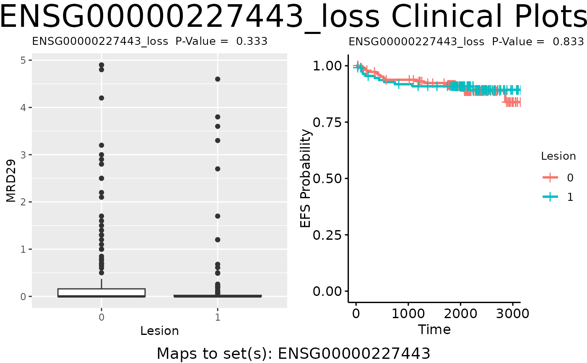
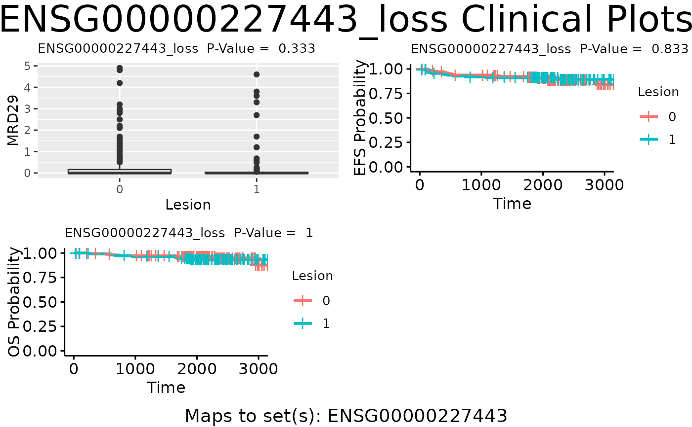

plot_feat_clin produces a matrix of feature level clinical plots for a specific feature.
Usage
plot_feat_clin(
feat.id,
beam.result,
beam.specs = NULL,
beam.set.pvals,
beam.feat.pvals,
n.row = NULL,
n.col = NULL
)Arguments
- feat.id
A character specifying the name of a feature. Must be in beam.result$beam.data$set.data
- beam.result
A beam.stats object from compute_beam_stats
- beam.specs
A data.frame. Default NULL, in which case beam.result$beam.specs is used. Otherwise can input other beam.specs data.frame that must contain name, mtx, mdl, plot columns.
- beam.set.pvals
A list containing BEAMR set p-values from compute_set_pvalues.
- beam.feat.pvals
A list containing feature-level p-values from compute_feature_pvalues.
- n.row
A numeric. Specify the number of rows for the plot layout; default NULL will automatically define the number of rows after number of columns specified.
- n.col
A numeric. Specify the number of columns for the plot layout; default NULL will use the number of omics types.
Examples
# \donttest{
test.beam.data <- prep_beam_data(main.data=clinf, mtx.data=omicdat,
mtx.anns=omicann, set.data=setdat,
set.anns=NULL, n.boot=10, seed=123)
#> Checking inputs: Fri Jul 12 18:40:11 2024
#> Checking that each element of mtx.data is a matrix: Fri Jul 12 18:40:11 2024
#> Checking that each element of mtx.anns is a data.frame: Fri Jul 12 18:40:11 2024
#> Aligning main.data with each mtx.data: Fri Jul 12 18:40:11 2024
#> Working on mtx.data Lesion (1 of 2): Fri Jul 12 18:40:11 2024
#> Working on mtx.data RNA (2 of 2): Fri Jul 12 18:40:11 2024
#> Warning: Some ids not matched; returning NAs for those.
#> Working on mtx.anns: Fri Jul 12 18:40:11 2024
#> Matching matrix 1 with annotations: Fri Jul 12 18:40:11 2024
#> Matching matrix 2 with annotations: Fri Jul 12 18:40:11 2024
#> Checking set.data: Fri Jul 12 18:40:11 2024
#> Ordering and indexing set.data: Fri Jul 12 18:40:11 2024
#> Checking section 1 of 40 of set.data: Fri Jul 12 18:40:11 2024
#> Generating bootstrap index matrix: Fri Jul 12 18:40:11 2024
#> Packaging and returning result: Fri Jul 12 18:40:11 2024
specs <- prep_beam_specs(beam.data=test.beam.data, endpts=c("MRD29", "EFS"),
firth=TRUE)
#> MRD29 is continuous, fitting lm
#> EFS is survival endpoint, fitting coxphf2
test.beam.stats <- compute_beam_stats(beam.data=test.beam.data, beam.specs=specs)
#> Working on analysis 1 of 4 : Fri Jul 12 18:40:11 2024
#> Lesionlm(MRD29~mtx.row,data=main.data,model=T)
#> Working on bootstrap 0 of 11 : Fri Jul 12 18:40:11 2024
#> Working on bootstrap 10 of 11 : Fri Jul 12 18:40:11 2024
#> Working on analysis 2 of 4 : Fri Jul 12 18:40:11 2024
#> RNAlm(MRD29~mtx.row,data=main.data,model=T)
#> Working on bootstrap 0 of 11 : Fri Jul 12 18:40:11 2024
#> Working on bootstrap 10 of 11 : Fri Jul 12 18:40:11 2024
#> Working on analysis 3 of 4 : Fri Jul 12 18:40:11 2024
#> Lesioncoxphf2(EFS~mtx.row,data=main.data,model=T)
#> Working on bootstrap 0 of 11 : Fri Jul 12 18:40:11 2024
#> Working on bootstrap 10 of 11 : Fri Jul 12 18:40:26 2024
#> Working on analysis 4 of 4 : Fri Jul 12 18:40:28 2024
#> RNAcoxphf2(EFS~mtx.row,data=main.data,model=T)
#> Working on bootstrap 0 of 11 : Fri Jul 12 18:40:28 2024
#> Working on bootstrap 10 of 11 : Fri Jul 12 18:40:46 2024
test.pvals <- compute_set_pvalues(beam.stats=test.beam.stats)
#> Preparing bootstrap results for calculating feature set p-values: Fri Jul 12 18:40:47 2024
#> Finding stats for each data matrix:Fri Jul 12 18:40:47 2024
#> Finding stats for data matrix Lesion: Fri Jul 12 18:40:47 2024
#> Finding features with with Lesion.MRD29 stats: Fri Jul 12 18:40:47 2024
#> Finding features with with Lesion.EFS stats: Fri Jul 12 18:40:47 2024
#> Finding stats for data matrix RNA: Fri Jul 12 18:40:47 2024
#> Finding features with with RNA.MRD29 stats: Fri Jul 12 18:40:47 2024
#> Finding features with with RNA.EFS stats: Fri Jul 12 18:40:47 2024
#> Found 80 rows of stats: Fri Jul 12 18:40:47 2024
#> Merging stats with feature-sets: Fri Jul 12 18:40:47 2024
#> Merged feature-set stat rows: 80
#> Ordering and indexing feature sets: Fri Jul 12 18:40:47 2024
#> Cleaning up beam.stat matrices:Fri Jul 12 18:40:47 2024
#> Working on matrix 1 of 4: Fri Jul 12 18:40:47 2024
#> Working on matrix 2 of 4: Fri Jul 12 18:40:47 2024
#> Working on matrix 3 of 4: Fri Jul 12 18:40:47 2024
#> Working on matrix 4 of 4: Fri Jul 12 18:40:47 2024
#> Computing p-value for feature set 1 of 34: Fri Jul 12 18:40:47 2024
#> 12ENSG00000081760
#> Computing p-value for feature set 26 of 34: Fri Jul 12 18:40:47 2024
#> 6364ENSG00000229835
#> Finished computing p-values at: Fri Jul 12 18:40:47 2024
#> Minimum q-value is 0.165505833699241
#> Creating set p-value data frame.
#> Done creating data frame.
#> Creating list for output.
test.feat.pvals <- compute_feature_pvalues(beam.stats=test.beam.stats)
#> Computing feature p-values for stat matrix 1 of 4: Fri Jul 12 18:40:47 2024
#> This matrix has 20 features.
#> Computing feature p-values for stat matrix 2 of 4: Fri Jul 12 18:40:47 2024
#> This matrix has 20 features.
#> Computing feature p-values for stat matrix 3 of 4: Fri Jul 12 18:40:47 2024
#> This matrix has 20 features.
#> Computing feature p-values for stat matrix 4 of 4: Fri Jul 12 18:40:47 2024
#> This matrix has 20 features.
plot.specs <- prep_beam_plot(beam.data=test.beam.data, beam.specs=specs)
test.plot <- plot_feat_clin(beam.result=test.beam.stats, beam.specs=plot.specs,
beam.set.pvals=test.pvals,
beam.feat.pvals=test.feat.pvals,
feat.id="ENSG00000227443_loss",
n.col=2, n.row=NULL)

# }
data(beam_stats)
test.pvals <- compute_set_pvalues(beam.stats=beam_stats)
#> Preparing bootstrap results for calculating feature set p-values: Fri Jul 12 18:40:48 2024
#> Finding stats for each data matrix:Fri Jul 12 18:40:48 2024
#> Finding stats for data matrix Lesion: Fri Jul 12 18:40:48 2024
#> Finding features with with Lesion.MRD29 stats: Fri Jul 12 18:40:48 2024
#> Finding features with with Lesion.EFS stats: Fri Jul 12 18:40:48 2024
#> Finding features with with Lesion.OS stats: Fri Jul 12 18:40:48 2024
#> Finding stats for data matrix RNA: Fri Jul 12 18:40:48 2024
#> Finding features with with RNA.MRD29 stats: Fri Jul 12 18:40:48 2024
#> Finding features with with RNA.EFS stats: Fri Jul 12 18:40:48 2024
#> Finding features with with RNA.OS stats: Fri Jul 12 18:40:48 2024
#> Found 120 rows of stats: Fri Jul 12 18:40:48 2024
#> Merging stats with feature-sets: Fri Jul 12 18:40:48 2024
#> Merged feature-set stat rows: 120
#> Ordering and indexing feature sets: Fri Jul 12 18:40:48 2024
#> Cleaning up beam.stat matrices:Fri Jul 12 18:40:48 2024
#> Working on matrix 1 of 6: Fri Jul 12 18:40:48 2024
#> Working on matrix 2 of 6: Fri Jul 12 18:40:48 2024
#> Working on matrix 3 of 6: Fri Jul 12 18:40:48 2024
#> Working on matrix 4 of 6: Fri Jul 12 18:40:48 2024
#> Working on matrix 5 of 6: Fri Jul 12 18:40:48 2024
#> Working on matrix 6 of 6: Fri Jul 12 18:40:48 2024
#> Computing p-value for feature set 1 of 34: Fri Jul 12 18:40:48 2024
#> 13ENSG00000081760
#> Computing p-value for feature set 26 of 34: Fri Jul 12 18:40:48 2024
#> 9496ENSG00000229835
#> Finished computing p-values at: Fri Jul 12 18:40:48 2024
#> Minimum q-value is 0.106439437831269
#> Creating set p-value data frame.
#> Done creating data frame.
#> Creating list for output.
test.feat.pvals <- compute_feature_pvalues(beam.stats=beam_stats)
#> Computing feature p-values for stat matrix 1 of 6: Fri Jul 12 18:40:48 2024
#> This matrix has 20 features.
#> Computing feature p-values for stat matrix 2 of 6: Fri Jul 12 18:40:48 2024
#> This matrix has 20 features.
#> Computing feature p-values for stat matrix 3 of 6: Fri Jul 12 18:40:48 2024
#> This matrix has 20 features.
#> Computing feature p-values for stat matrix 4 of 6: Fri Jul 12 18:40:48 2024
#> This matrix has 20 features.
#> Computing feature p-values for stat matrix 5 of 6: Fri Jul 12 18:40:48 2024
#> This matrix has 20 features.
#> Computing feature p-values for stat matrix 6 of 6: Fri Jul 12 18:40:48 2024
#> This matrix has 20 features.
plot.specs <- prep_beam_plot(beam.data=beam_stats$beam.data, beam.specs=beam_stats$beam.specs)
test.plot <- plot_feat_clin(beam.result=beam_stats, beam.specs=plot.specs,
beam.set.pvals=test.pvals, beam.feat.pvals=test.feat.pvals,
feat.id="ENSG00000227443_loss",
n.col=2, n.row=NULL)
